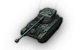
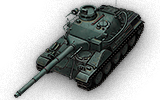
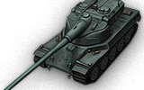
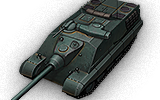
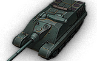
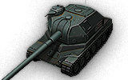
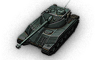

France · Tier X
All nations and tiers · EU v20410 → RU v14600ru · 3 November 2026
AMX 13 105 · Tier X

Firepower
DPM (HP/min) EU 2 239.85  RU 2 201.57
RU 2 201.57
Rate of fire (rounds/min) EU 5.74 RU 5.65
Reload time (s) EU 25.89 RU 26.43
Shell velocity (m/s) EU 1 100 RU 1 000
Gun handling
Dispersion (m/100 m) EU 0.38 RU 0.40
Dispersion · damaged EU 0.77 RU 0.81
Dispersion · moving EU 0.13 RU 0.15
Dispersion · tank traverse EU 0.13 RU 0.15
Dispersion · turret traverse EU 0.10 RU 0.12
Mobility
Forward speed (km/h) EU 70 RU 68
Forward speed on hard terrain (km/h) EU 70 RU 68
Forward speed on medium terrain (km/h) EU 70 RU 68
Forward speed on soft terrain (km/h) EU 70 RU 68
Reverse speed (km/h) EU 25 RU 22
Terrain resist (hard) EU 0.86 RU 1.08
Terrain resist (med) EU 0.96 RU 1.20
Terrain resist (soft) EU 1.53 RU 1.92
Turret traverse (°/s) EU 43.81 RU 39.63
Tank traverse (°/s) EU 46.93 RU 41.72
Tank traverse on hard terrain (°/s) EU 46.93 RU 41.72
Tank traverse on medium terrain (°/s) EU 42.24 RU 37.55
Tank traverse on soft terrain (°/s) EU 26.40 RU 23.47
Armor & health
Track armor EU 10  RU 15
RU 15
Health EU 1 700 RU 1 400
AMX 30 B · Tier X

Damage (HP)
EU  APCR 390 /
APCR 390 /  HEAT 390 /
HEAT 390 /  HE 480 → RU
HE 480 → RU  APCR 420 /
APCR 420 /  HEAT 420 /
HEAT 420 /  HE 510
HE 510
Firepower
DPM (HP/min) EU 3 129 RU 3 348.23
Rate of fire (rounds/min) EU 8.02 RU 7.97
Reload time (s) EU 7.48 RU 7.53
Shell velocity (m/s) EU 1 100 RU 1 300
Potential damage EU 19 500 RU 21 000
Miscellaneous
Shell cost EU 1 210 RU 1 310
AMX 50 B · Tier X

Penetration (mm)
EU  AP 267 /
AP 267 /  APCR 327 /
APCR 327 /  HE 65 → RU
HE 65 → RU  AP 257 /
AP 257 /  APCR 325 /
APCR 325 /  HE 65
HE 65
Damage (HP)
EU  AP 420 /
AP 420 /  APCR 420 /
APCR 420 /  HE 520 → RU
HE 520 → RU  AP 400 /
AP 400 /  APCR 400 /
APCR 400 /  HE 515
HE 515
Firepower
DPM (HP/min) EU 2 779.68 RU 2 618.37
Rate of fire (rounds/min) EU 6.62 RU 6.55
Reload time (s) EU 28.76 RU 29.16
Clip damage · damage EU 1 680 RU 1 600
Potential damage EU 23 520 RU 22 400
Gun handling
Dispersion · moving EU 0.17 RU 0.18
Dispersion · tank traverse EU 0.17 RU 0.18
Dispersion · firing EU 3.50 RU 4
Mobility
Forward speed on hard terrain (km/h) EU 61.18 RU 59.71
Forward speed on medium terrain (km/h) EU 56.81 RU 55.44
Forward speed on soft terrain (km/h) EU 34.58 RU 33.75
Engine power (hp) EU 1 300 RU 1 268.74
Power/weight (hp/t) EU 20.90 RU 20.39
Tank traverse (°/s) EU 43.81 RU 37.55
Tank traverse on hard terrain (°/s) EU 43.81 RU 37.55
Tank traverse on medium terrain (°/s) EU 40.68 RU 34.87
Tank traverse on soft terrain (°/s) EU 24.76 RU 21.22
Armor & health
Health EU 2 200 RU 2 300
AMX 50 Foch (155) · Tier X

Firepower
DPM (HP/min) EU 2 330.05 RU 2 586.90
Rate of fire (rounds/min) EU 3.11 RU 3.45
Reload time (s) EU 47.94 RU 42.19
Gun handling
Dispersion · moving EU 0.20 RU 0.16
Dispersion · tank traverse EU 0.20 RU 0.16
Mobility
Reverse speed (km/h) EU 13 RU 18
AMX 50 Foch B · Tier X

Gun handling
Dispersion · moving EU 0.13 RU 0.16
Dispersion · tank traverse EU 0.13 RU 0.16
Dispersion · turret traverse EU 0.10 RU 0.14
Mobility
Forward speed on medium terrain (km/h) EU 48.69 RU 47.42
Forward speed on soft terrain (km/h) EU 32.46 RU 31.61
Reverse speed (km/h) EU 15 RU 18
Engine power (hp) EU 1 150 RU 1 120
Power/weight (hp/t) EU 20.47 RU 19.94
Bat.-Châtillon 155 58 · Tier X

Penetration (mm)
EU  HE 48 /
HE 48 /  HE 60 /
HE 60 /  AP 310 → RU
AP 310 → RU  HE 39 /
HE 39 /  AP 310
AP 310
Damage (HP)
EU  HE 680 /
HE 680 /  HE 830 /
HE 830 /  AP 460 → RU
AP 460 → RU  HE 900 /
HE 900 /  AP 500
AP 500
Firepower
DPM (HP/min) EU 1 752.17 RU 2 319.05
Clip damage · damage EU 2 040 RU 2 700
Explosion radius EU 7.60 RU 6.80
Stun duration · maximum (s) EU 27 → RU —
Stun duration · minimum (s) EU 12.15 → RU —
Potential damage EU 24 480 RU 32 400
Gun handling
Dispersion (m/100 m) EU 0.58 RU 0.56
Dispersion · damaged EU 1.17 RU 1.11
Dispersion · moving EU 0.50 RU 0.45
Dispersion · tank traverse EU 0.50 RU 0.45
Dispersion · turret traverse EU 0.45 RU 0.40
Armor & health
Health · ammo rack EU 250 RU 150
Miscellaneous
Shell cost EU 1 120 RU 1 330
Bat.-Châtillon 25 t · Tier X

Firepower
DPM (HP/min) EU 2 375.15 RU 2 609.14
Rate of fire (rounds/min) EU 6.09 RU 6.69
Reload time (s) EU 38.35 RU 35.24
Clip damage · time (s) EU 10.91 RU 9.60
Intra-clip reload EU 2.73 RU 2.40
Ammo capacity EU 50 RU 40
Potential damage EU 19 500 RU 15 600
Gun handling
Aim time (s) EU 2.30 RU 2.21
Dispersion (m/100 m) EU 0.34 RU 0.35
Dispersion · damaged EU 0.67 RU 0.69
Dispersion · moving EU 0.14 RU 0.17
Dispersion · tank traverse EU 0.14 RU 0.17
Dispersion · turret traverse EU 0.10 RU 0.16
Dispersion · firing EU 3 RU 3.50
Mobility
Tank traverse on hard terrain (°/s) EU 41.62 RU 40.30
Tank traverse on medium terrain (°/s) EU 37.45 RU 36.27
Tank traverse on soft terrain (°/s) EU 23.41 RU 22.67
Armor & health
Health EU 1 800 RU 1 900